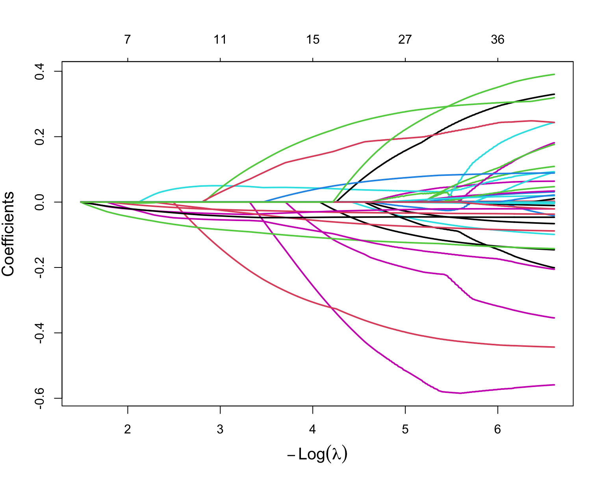
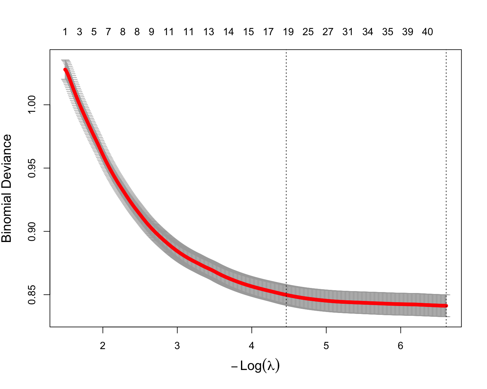
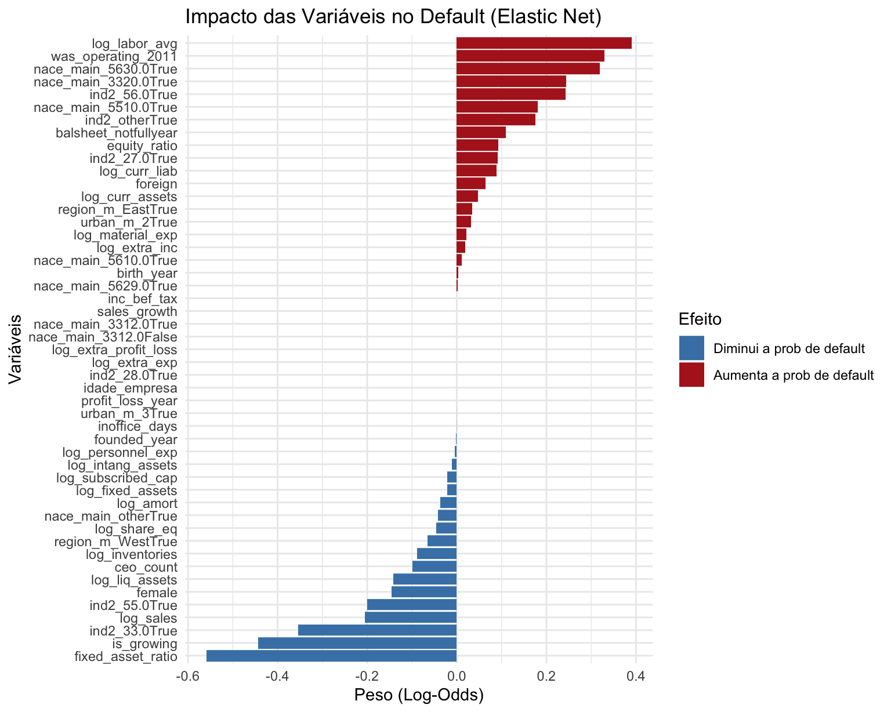
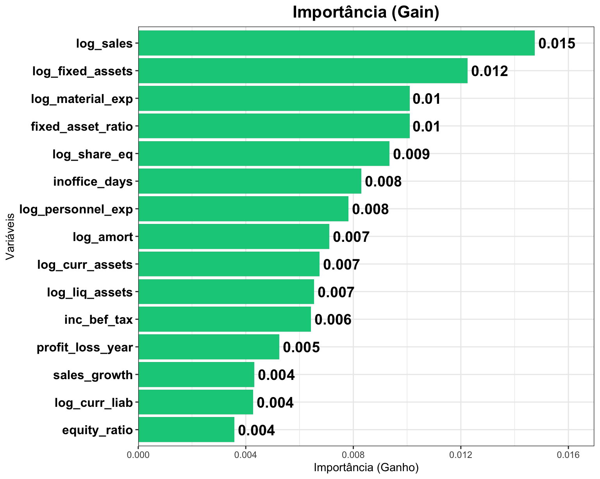
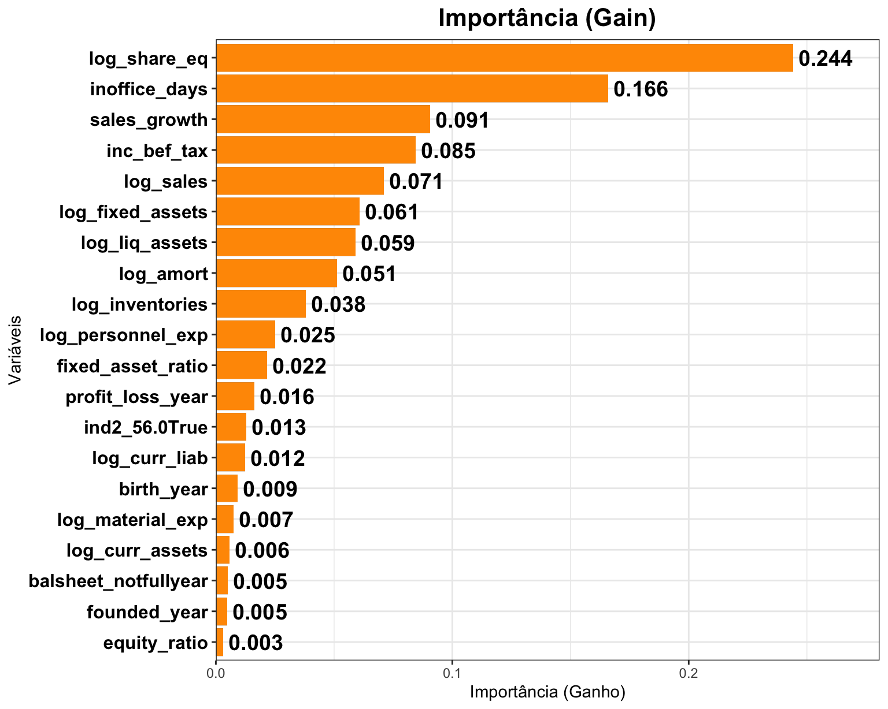
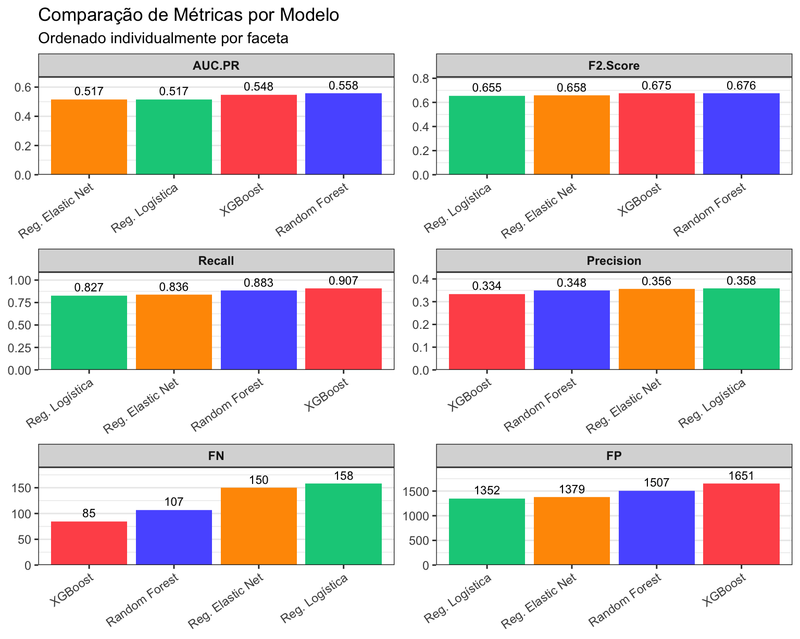
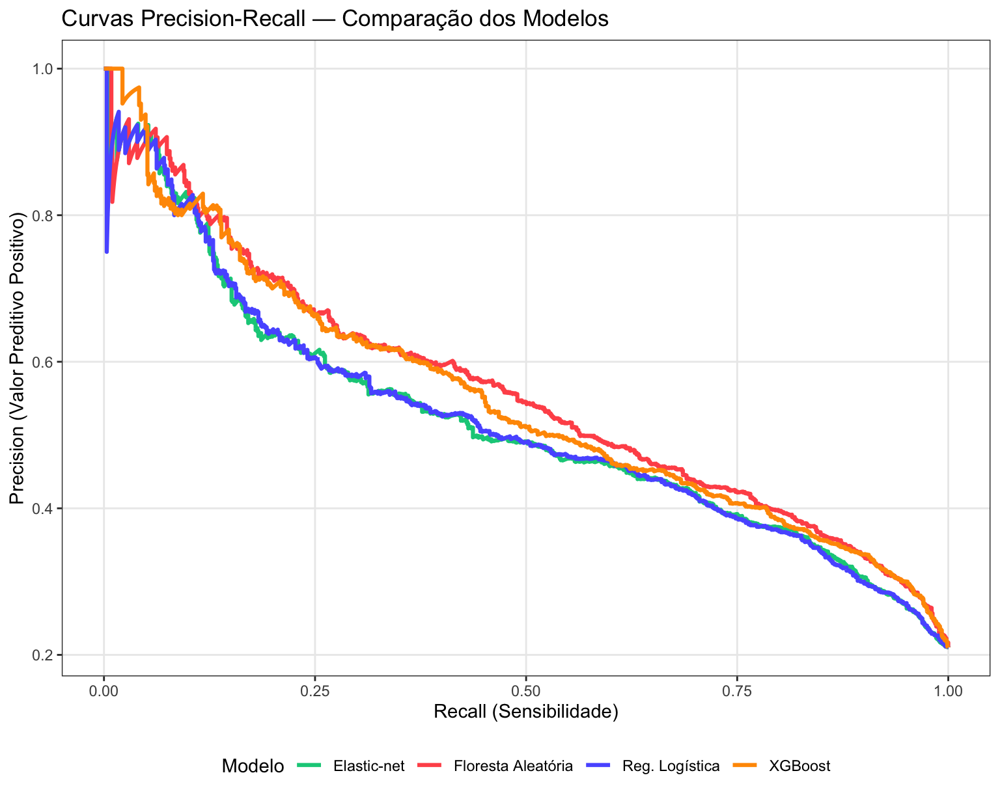
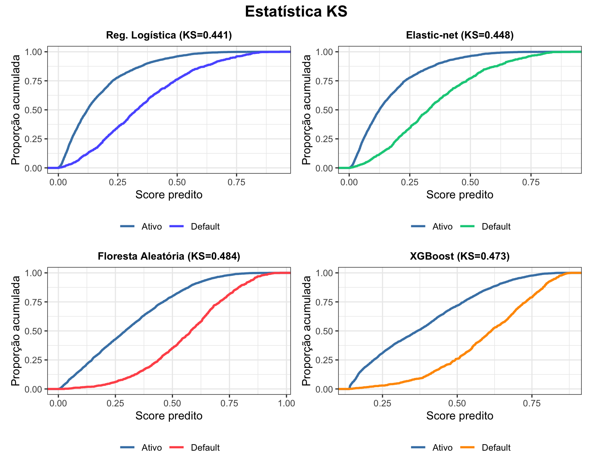
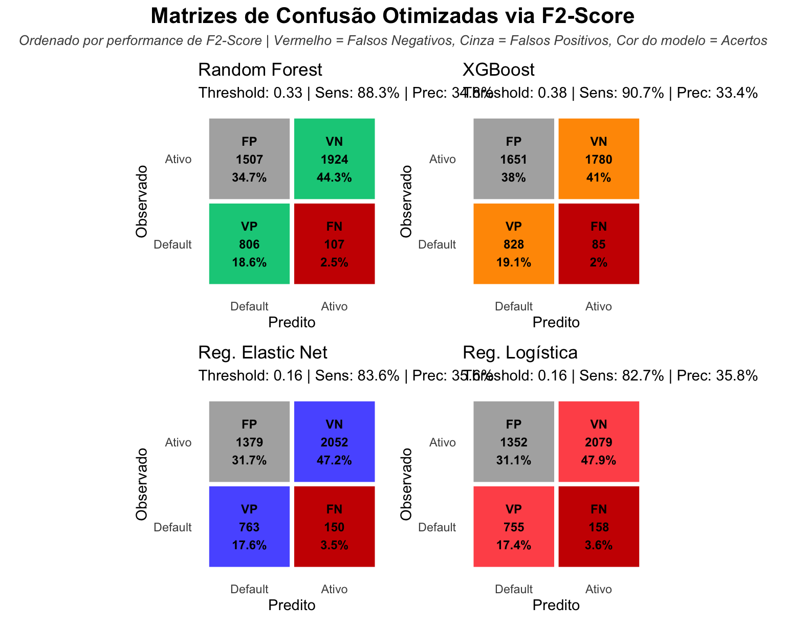
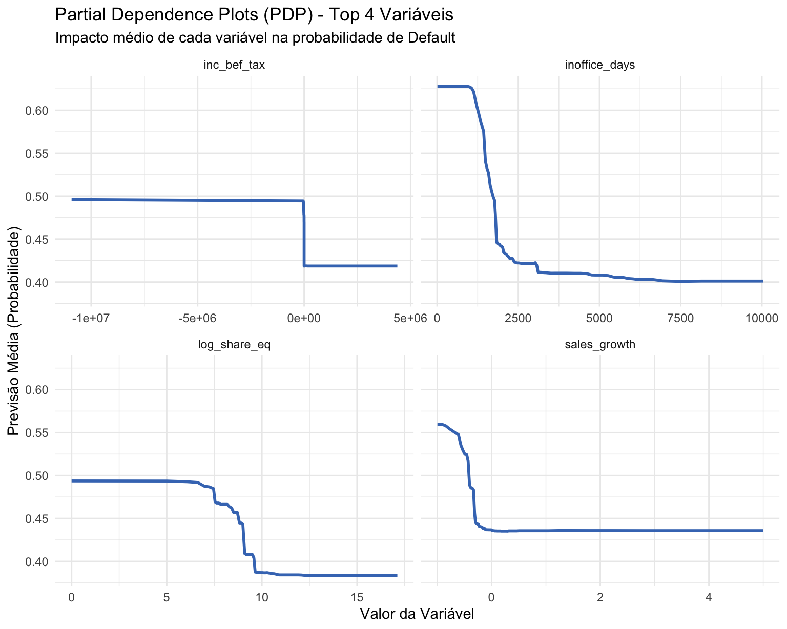

library(tidyverse)
library(tidytext)
library(dplyr)
library(ggplot2)
library(rsample)
library(pROC)
library(yardstick)
library(patchwork)
library(glmnet)
library(vip)
library(ranger)
library(xgboost)
library(skimr)
library(DALEX)
library(rpart) # Árvores de decisão
library(rpart.plot) # Visualização de árvores
library(survival) # Análise de sobrevivência
library(survminer) # Visualização de curvas de sobrevivência2. Modelagem
Comparação de modelos e seleção sob custo assimétrico
Objetivo: Desenvolver um modelo preditivo para indicar se uma empresa deixará de operar em um período de até dois anos.
Base de dados: bisnode_2012_preprocessado_v3.csv — painel de empresas com dados financeiros de 2012, pré-processado em Python.
Variável resposta: default (1 = empresa encerrou operações em até 2 anos; 0 = continuou operando)
# Parametrizando o formato dos gráficos
knitr::opts_chunk$set(
fig.width = 8,
fig.height = 6,
fig.asp = 0.8, # Define a proporção altura/largura automaticamente
out.width = "100%" # Garante que ele ocupe a largura total da página sem distorcer
)1. Dados e Exploração Inicial
df <- read.csv("data/bisnode_2012_preprocessado_v3.csv")
cat("Dimensões:", nrow(df), "empresas x", ncol(df), "variáveis\n")Dimensões: 21715 empresas x 49 variáveis# Distribuição da variável resposta
df |>
count(default) |>
mutate(
classe = ifelse(default == 1, "Default (saiu)", "Ativo"),
percentual = round(n / sum(n) * 100, 2)
) default n classe percentual
1 0 17153 Ativo 78.99
2 1 4562 Default (saiu) 21.012. Definição das Métricas de Avaliação
O problema de prever o encerramento de empresas apresenta desbalanceamento de classes: empresas que encerram (default=1) são minoria. Isso torna a acurácia simples uma métrica enganosa — um modelo que prevê sempre “ativo” pode ter acurácia alta mas ser inútil.
Além disso, o problema possui assimetria de custo, onde erros do tipo falso negativo (FN) — não identificar uma empresa que irá encerrar — são significativamente mais prejudiciais do que falsos positivos.
| Métrica | Fórmula | Etapa | Definição | Explicação |
|---|---|---|---|---|
| AUC-PR (Área sob a curva Precision-Recall) | Área sob a curva de precisão vs recall | Avaliação em cross-validation e qualidade geral dos modelos vencedores | Resume o trade-off entre sensibilidade (recall) e precisão (precision) ao longo de diferentes thresholds | Mede a capacidade do modelo de identificar corretamente a classe positiva, sendo mais informativa que a ROC-AUC em cenários com classe rara |
| F2-Score | (1 + 2²) * (Precisão * Recall) / (2² * Precisão + Recall) | Escolha de threshold e avaliação final | Média harmônica ponderada entre precisão e recall | Dá mais peso ao recall, priorizando a redução de falsos negativos na escolha do ponto de corte |
| KS (Kolmogorov-Smirnov) | max diferença entre F₁(t) e F₀(t) | Qualidade geral dos modelos vencedores | Diferença máxima entre as distribuições acumuladas de probabilidades para as classes | Mede o poder de separação entre as classes — amplamente utilizado em modelos de crédito e risco |
| Sensibilidade (Recall) | VP / (VP + FN) | Avaliação final | Proporção de positivos corretamente identificados | Mede diretamente a capacidade de detectar empresas que vão encerrar |
| Precisão | VP / (VP + FP) | Avaliação final | Proporção de positivos preditos que são corretos | Controla o excesso de falsos positivos |
| Falso Negativo (FN) | FN = empresas default classificadas como ativas | Avaliação final | Casos positivos classificados como negativos | Erro mais crítico de negócio, representa perda financeira direta |
| Falso Positivo (FP) | FP = empresas ativas classificadas como default | Avaliação final | Casos negativos classificados como positivos | Erro menos crítico de negócio, representa perda financeira marginal |
Função auxiliar para calcular as métricas=
calc_metricas <- function(prob, real, label = "Modelo") {
# Preparação
prob <- as.numeric(unname(prob))
real_bin <- as.integer(real == "yes")
ok <- !is.na(prob)
prob <- prob[ok]
real_bin <- real_bin[ok]
# Grid de thresholds
cortes <- seq(0, 1, by = 0.01)
resultados <- purrr::map_dfr(cortes, function(corte) {
pred_bin <- as.integer(prob >= corte)
vp <- sum(pred_bin == 1 & real_bin == 1)
fp <- sum(pred_bin == 1 & real_bin == 0)
fn <- sum(pred_bin == 0 & real_bin == 1)
precision <- ifelse((vp + fp) == 0, 0, vp / (vp + fp))
recall <- ifelse((vp + fn) == 0, 0, vp / (vp + fn))
beta2 <- 2^2
f2 <- ifelse((precision + recall) == 0, 0,
(1 + beta2) * precision * recall / (beta2 * precision + recall))
tibble(
corte = corte,
precision = precision,
recall = recall,
f2 = f2,
fn = fn,
fp = fp
)
})
# Melhor threshold (max F2)
best <- resultados %>%
dplyr::slice_max(f2, n = 1, with_ties = FALSE)
# KS
prob_pos <- prob[real_bin == 1]
prob_neg <- prob[real_bin == 0]
ks_val <- if (length(prob_pos) >= 2 && length(prob_neg) >= 2) {
tryCatch(
suppressWarnings(as.numeric(ks.test(prob_pos, prob_neg)$statistic)),
error = function(e) NA_real_
)
} else {
NA_real_
}
# AUC-PR
auc_pr <- pr_auc_vec(
truth = factor(real, levels = c("no", "yes")),
estimate = prob,
event_level = "second"
)
tibble(
Modelo = label,
Threshold = round(best$corte, 2),
AUC.PR = round(auc_pr, 4),
F2.Score = round(best$f2, 4),
KS = round(ks_val, 4),
Recall = round(best$recall, 4),
Precision = round(best$precision, 4),
FN = best$fn,
FP = best$fp
)
}3. Modelos
Serão ajustados cinco classes de modelos:
| # | Modelo | Pacote | Hiperparâmetros ajustados |
|---|---|---|---|
| 1 | Regressão Logística | stats::glm |
Nenhum |
| 2 | Elastic-net | glmnet |
λ via CV de 5 folds |
| 3 | Floresta Aleatória | ranger |
ntrees, mtry e nodesize via CV de 5 folds |
| 4 | XGBoost | xgboost |
nrounds, eta, subsample e max_depth via CV de 5 folds |
Separação treino e teste
df_model <- df |>
mutate(default = factor(default, levels = c(0, 1), labels = c("no", "yes"))) |>
mutate_if(is.character, as.factor) # Transforma colunas texto em fatores
y <- df_model$default
X <- model.matrix(default ~ . -1, df_model)
df_model <- data.frame(X)
df_model$default <- y
set.seed(42)
split <- initial_split(df_model, prop = 0.8, strata = default)
treino <- training(split)
teste <- testing(split)
set.seed(42)
folds <- vfold_cv(treino, v = 5)3.1 Regressão Logística
A Regressão Logística modela a probabilidade de ocorrência do evento de interesse o assumindo uma relação linear entre as variáveis explicativas e o log-odds da resposta.
Treinando o modelo
fit_reglog <- glm(default ~ ., data = treino, family = 'binomial')
prob_reglog <- predict(fit_reglog, teste, type = 'response')Visualizando métricas de avaliação
metr_reglog <- calc_metricas(prob_reglog, teste$default, label = "Reg. Logística")
print(metr_reglog)# A tibble: 1 × 9
Modelo Threshold AUC.PR F2.Score KS Recall Precision FN FP
<chr> <dbl> <dbl> <dbl> <dbl> <dbl> <dbl> <int> <int>
1 Reg. Logística 0.16 0.517 0.656 0.441 0.827 0.358 158 13523.3 Elstic net 0.5 (rpart)
A Regressão Logística com Elastic-Net estende o modelo clássico ao incorporar penalização na estimação dos coeficientes. A regularização combina as normas L1 (LASSO) e L2 (Ridge), com α = 0.5 atribuindo pesos iguais a ambas.
Treinando o modelo e visualizando o ajuste dos coeficientes e do melhor lamba via cross-validation do glmnet
set.seed(42)
# Separação de treino e teste em matrizes para uso do GLMNET
x_train <- as.matrix(treino |> select(-default))
y_train <- treino$default
x_test <- as.matrix(teste |> select(-default))
y_test <- teste$default
alfa = 0.5
elastic_net <- glmnet(x_train, y_train, alpha = alfa, nlambda = 1000, family = "binomial")
plot(elastic_net, lwd = 2, cex.lab = 1.3, xvar = "lambda")
cv_elastic <- cv.glmnet(x_train, y_train, alpha = alfa, lambda = elastic_net$lambda, family = "binomial")
plot(cv_elastic, cex.lab = 1.3)
Visualizando coeficiente das preditoras no modelo ajustado
coef_elastic <- coef(cv_elastic, s = "lambda.min")
coef_df <- data.frame(
variavel = rownames(coef_elastic),
coeficiente = as.vector(coef_elastic)
) |>
arrange(desc(abs(coeficiente)))
ggplot(coef_df |> filter(variavel != "(Intercept)"),
aes(x = reorder(variavel, coeficiente), y = coeficiente, fill = coeficiente > 0)) +
geom_col() +
coord_flip() +
scale_fill_manual(values = c("steelblue", "firebrick"), labels = c("Diminui a prob de default", "Aumenta a prob de default")) +
labs(title = "Impacto das Variáveis no Default (Elastic Net)",
x = "Variáveis", y = "Peso (Log-Odds)", fill = "Efeito") +
theme_minimal()
Prevendo default no conjunto de teste e visualizando métricas de avaliação
#Gerando probabilidades
prob_elastic <- predict(elastic_net, newx = x_test, s = cv_elastic$lambda.min, type = "response")
#Calculando métricas
metr_elastic <- calc_metricas(prob_elastic, teste$default, label = "Reg. Elastic Net")
print(metr_elastic)# A tibble: 1 × 9
Modelo Threshold AUC.PR F2.Score KS Recall Precision FN FP
<chr> <dbl> <dbl> <dbl> <dbl> <dbl> <dbl> <int> <int>
1 Reg. Elastic Net 0.16 0.517 0.658 0.448 0.836 0.356 150 13793.4 Floresta Aleatória
A Floresta Aleatória (Random Forest) retorna a média das previsões de ntrees árvores crescidas em amostras bootstrap, com cada split considerando apenas mtry variáveis aleatórias. Isso reduz a correlação entre as árvores, tornando a média do ensemble mais estável e, consequentemente, diminuindo a variância do modelo sem aumentar significativamente o viés.
Treinando modelos para validação cruzada
##REVIEW: ENTENDER ESSES FOLDS ESTRANHOS
set.seed(42)
k <- 5
folds <- sample(rep(1:k, length.out = nrow(treino)))
treino$default <- as.factor(treino$default)
grid <- expand.grid(
ntrees = c(100, 200, 300),
mtry = c(5, 7, 10),
nodesize = c(5, 10, 20)
)
# Loop de validação cruzada
resultados_rf <- map_dfr(1:nrow(grid), function(i) {
params <- grid[i, ]
aucs_pr <- c()
for (f in 1:k) {
treino_cv <- treino[folds != f, ]
valid_cv <- treino[folds == f, ]
# Treinando modelo
floresta <- ranger(
default ~ .,
data = treino_cv,
num.trees = params$ntrees,
mtry = params$mtry,
min.node.size = params$nodesize,
probability = TRUE,
importance = "permutation",
replace = TRUE,
sample.fraction = c(0.2, 0.2) # Sorteia proporções iguais das duas classes em cada árvore
)
# Previsão
pred <- predict(floresta, valid_cv)$predictions[, "yes"]
#Calculando AUC-PR
eval_df <- tibble(
real = factor(valid_cv$default, levels = c("yes", "no")), # 'yes' como primeiro nível (evento)
prob = pred
)
auc_pr_val <- eval_df |>
yardstick::pr_auc(truth = real, prob) |>
pull(.estimate)
aucs_pr <- c(aucs_pr, auc_pr_val)
}
tibble(
ntrees = params$ntrees,
mtry = params$mtry,
nodesize = params$nodesize,
auc_pr_cv = mean(aucs_pr)
)
})Computing permutation importance.. Progress: 83%. Estimated remaining time: 16 seconds.Visualizando melhor combinação de hiperparâmetros da validação cruzada e treinando o modelo com o conjunto de treino completo
print(resultados_rf |>
arrange(desc(auc_pr_cv)))# A tibble: 27 × 4
ntrees mtry nodesize auc_pr_cv
<dbl> <dbl> <dbl> <dbl>
1 300 5 5 0.547
2 300 7 10 0.547
3 300 10 5 0.547
4 300 7 5 0.546
5 200 7 10 0.545
6 200 10 10 0.545
7 200 10 20 0.545
8 300 10 10 0.545
9 300 10 20 0.545
10 200 7 20 0.544
# ℹ 17 more rowsmelhor_combinacao <- resultados_rf |>
arrange(desc(auc_pr_cv)) |>
slice(1)
# Modelo otimizado
set.seed(99)
floresta_otimizada <- ranger(
default ~ .,
data = treino,
num.trees = melhor_combinacao$ntrees,
mtry = melhor_combinacao$mtry,
min.node.size = melhor_combinacao$nodesize,
probability = TRUE,
importance = "permutation",
replace = TRUE,
sample.fraction = c(0.2, 0.2)
)Prevendo default no conjunto de teste e visualizando métricas de avaliação
#Gerando probabilidades
prob_floresta_otimizada <- predict(floresta_otimizada, teste)$predictions[, "yes"]
#Calculando métricas
metr_floresta <- calc_metricas(prob_floresta_otimizada, teste$default, label = "Random Forest")
print(metr_floresta)# A tibble: 1 × 9
Modelo Threshold AUC.PR F2.Score KS Recall Precision FN FP
<chr> <dbl> <dbl> <dbl> <dbl> <dbl> <dbl> <int> <int>
1 Random Forest 0.33 0.558 0.676 0.484 0.883 0.348 107 1507Visualizando importância de variáveis para o modelo
# 1. Gerar o objeto base
p <- vip(floresta_otimizada, num_features = 15)
# 2. Customizar garantindo que todos os '+' estejam conectados
p +
geom_col(fill = "#00CC88") +
geom_text(
aes(label = round(Importance, 3)),
hjust = -0.1,
color = "black",
size = 5,
fontface = "bold"
) +
scale_y_continuous(expand = expansion(mult = c(0, 0.15))) +
labs(
title = "Importância (Gain)",
y = "Importância (Ganho)",
x = "Variáveis"
) +
theme_bw() +
theme(
axis.text.y = element_text(size = 12, face = "bold", color = "black"),
plot.title = element_text(size = 16, face = "bold", hjust = 0.5)
)
3.5 XGBoost
O XGBoost (Extreme Gradient Boosting) é um método de boosting que constrói árvores de decisão de forma sequencial, onde cada nova árvore busca corrigir os erros residuais das anteriores. Diferente da Floresta Aleatória, que reduz variância via bagging, o XGBoost foca em reduzir o viés do modelo ao aprender padrões mais complexos.
Treinando modelos para validação cruzada
# Recriar folds
set.seed(42)
folds <- vfold_cv(treino, v = 5)
# Calcular scale_pos_weight (importante se desbalanceado)
n_pos <- sum(treino$default == "yes")
n_neg <- sum(treino$default == "no")
scale_pos_weight <- n_neg / n_pos
# Criando matrizes XGB
xgb_treino <- xgb.DMatrix(label = as.integer(treino$default == "yes"), data = as.matrix(select(treino, -default)))
xgb_teste <- xgb.DMatrix(label = as.integer(teste$default == "yes"), data = as.matrix(select(teste, -default)))
hiperparametros_xgb <- crossing(
nrounds = c(200, 500), # Número de árvores de decisão sequenciais
eta = c(0.01, 0.1), # Taxa de aprendizado. Range: [0,1]
subsample = c(0.5, 0.7), # Fração de observações selecionadas aleatoriamente
max_depth = c(4, 8) # Máxima profundidade da árvore
)
xgboost_hiperparametros <- function(splits, eta, nrounds, subsample, max_depth){
treino_fold <- training(splits)
teste_fold <- testing(splits)
xgb_treino <- xgb.DMatrix(
label = as.integer(treino_fold$default == "yes"),
data = as.matrix(select(treino_fold, -default))
)
xgb_teste <- xgb.DMatrix(
label = as.integer(teste_fold$default == "yes"),
data = as.matrix(select(teste_fold, -default))
)
fit_xgb <- xgb.train(
data = xgb_treino,
nrounds = nrounds,
evals = list(val = xgb_teste),
early_stopping_rounds = 50, #Early stopping rounds
params = list(
eta = eta,
subsample = subsample,
max_depth = max_depth,
nthread = 10,
objective = 'binary:logistic',
eval_metric = 'aucpr'
),
verbose = FALSE
)
best_iter <- fit_xgb$best_iteration
preds <- predict(
fit_xgb,
xgb_teste
)
eval_df_xgb <- tibble(
real = factor(teste_fold$default, levels = c("no", "yes")),
prob = preds
)
auc_pr_val <- eval_df_xgb |>
pr_auc(truth = real, prob) |>
pull(.estimate)
return(as.numeric(auc_pr_val))
}
hiperparametros_xgb <- hiperparametros_xgb |>
crossing(folds) |>
mutate(
auc_pr_val = pmap_dbl(
list(splits, eta, nrounds, subsample, max_depth),
~ xgboost_hiperparametros(..1, ..2, ..3, ..4, ..5)
)
) |>
group_by(eta, nrounds, subsample, max_depth) |>
summarise(auc_pr_medio = mean(auc_pr_val, na.rm = TRUE)) |>
arrange(desc(auc_pr_medio))Visualizando melhor combinação de hiperparâmetros da validação cruzada e treinando o modelo com o conjunto de treino completo
(hiperparametros_xgb_otimizados <- hiperparametros_xgb |>
ungroup() |>
slice_max(auc_pr_medio))# A tibble: 1 × 5
eta nrounds subsample max_depth auc_pr_medio
<dbl> <dbl> <dbl> <dbl> <dbl>
1 0.01 200 0.7 4 0.639auc_xgb_otimizado <- hiperparametros_xgb_otimizados$auc_pr_medio
fit_xgboost_otimizado <- xgb.train(
data = xgb_treino,
nrounds = hiperparametros_xgb_otimizados$nrounds,
params = list(
eta = hiperparametros_xgb_otimizados$eta,
subsample = hiperparametros_xgb_otimizados$subsample,
max_depth = hiperparametros_xgb_otimizados$max_depth,
nthread = 10,
objective = 'binary:logistic',
eval_metric = 'aucpr',
scale_pos_weight = scale_pos_weight
),
verbose = FALSE
)Prevendo default no conjunto de teste e visualizando métricas de avaliação
#Gerando probabilidades
best_iter_final <- fit_xgboost_otimizado$best_iteration
prob_xgboost <- predict(
fit_xgboost_otimizado,
xgb_teste
)
#Métricas de avaliação
metr_xgboost <- calc_metricas(prob_xgboost, teste$default, label = "XGBoost")
print(metr_xgboost)# A tibble: 1 × 9
Modelo Threshold AUC.PR F2.Score KS Recall Precision FN FP
<chr> <dbl> <dbl> <dbl> <dbl> <dbl> <dbl> <int> <int>
1 XGBoost 0.38 0.548 0.675 0.473 0.907 0.334 85 1651Visualizando importância de variáveis para o modelo
# 1. Gerar o objeto base
p <- vip(fit_xgboost_otimizado, num_features = 20, geom = "col")
# 2. Customizar garantindo que todos os '+' estejam conectados
p +
geom_col(fill = "#FF9900") +
geom_text(
aes(label = round(Importance, 3)),
hjust = -0.1,
color = "black",
size = 5,
fontface = "bold"
) +
scale_y_continuous(expand = expansion(mult = c(0, 0.15))) +
labs(
title = "Importância (Gain)",
y = "Importância (Ganho)",
x = "Variáveis"
) +
theme_bw() +
theme(
axis.text.y = element_text(size = 12, face = "bold", color = "black"),
plot.title = element_text(size = 16, face = "bold", hjust = 0.5)
)
4. Comparação dos Modelos
Todos os modelos são avaliados no mesmo conjunto de teste com as métricas definidas na Seção 2.
4.1 Comparativo de métricas e melhor modelo
Observando a performance dos melhores modelos com relação às métricas definidas.
# Tabela comparativa
resultados <- bind_rows(metr_reglog, metr_elastic, metr_floresta, metr_xgboost) |>
arrange(desc(F2.Score), desc(Recall), desc(Precision), desc(FN))
print(resultados)# A tibble: 4 × 9
Modelo Threshold AUC.PR F2.Score KS Recall Precision FN FP
<chr> <dbl> <dbl> <dbl> <dbl> <dbl> <dbl> <int> <int>
1 Random Forest 0.33 0.558 0.676 0.484 0.883 0.348 107 1507
2 XGBoost 0.38 0.548 0.675 0.473 0.907 0.334 85 1651
3 Reg. Elastic Net 0.16 0.517 0.658 0.448 0.836 0.356 150 1379
4 Reg. Logística 0.16 0.517 0.656 0.441 0.827 0.358 158 1352# Melhor modelo
melhor <- resultados$Modelo[1]
cat("\nMelhor modelo por F2-Score:", melhor, "\n")
Melhor modelo por F2-Score: Random Forest Comentário: Pela metodologia apresentada em aula, o Random Forest apresentou melhor performance segundo o critério do F2-Score (adotado pelo grupo como a mais relevante). Ainda, a AUC-PR também foi maior para esse modelo. Adicionalmente, é possível perceber que a performance do XGBoost foi bastante similar para a AUC-PR, F2-Score, Recall e Precision; para um problema de modelagem de risco de crédito, o conhecimento prévio do custo de um FN poderia alterar o ranking dos modelos discutidos. Ainda assim, na seção final, apresentamos uma visão em que o custo de uma empresa que deu default é, em média, equivalente à receita de 3 contratos adimplentes.
Visualização gráfica das métricas
resultados |> ## ajuste final de tamanho de fonte
select(-Threshold, -KS) |>
pivot_longer(cols = -Modelo, names_to = "Metrica", values_to = "Valor") |>
mutate(
Metrica = factor(Metrica, levels = c("AUC.PR", "F2.Score", "Recall", "Precision", "FN", "FP"))
) |>
group_by(Metrica) |>
mutate(Modelo = reorder_within(Modelo, Valor, Metrica)) |>
ggplot(aes(x = Modelo, y = Valor, fill = str_remove(Modelo, "___.*$"))) +
geom_col(alpha = 1, show.legend = FALSE) +
geom_text(aes(label = round(Valor, 3)), vjust = -0.5, size = 3) +
facet_wrap(~ Metrica, scales = "free", ncol = 2) +
tidytext::scale_x_reordered() +
scale_fill_manual(values = c("#5B5FFF", "#FF9900", "#00CC88", "#FF5757", "#9B59B6")) +
scale_y_continuous(expand = expansion(mult = c(0, 0.2))) +
labs(
title = "Comparação de Métricas por Modelo",
subtitle = "Ordenado individualmente por faceta",
x = NULL, y = NULL
) +
theme_bw() +
theme(
axis.text.x = element_text(angle = 35, hjust = 1),
strip.text = element_text(face = "bold"),
panel.grid.major.x = element_blank()
)
4.2 Curva Precision-Recall
A curva Precision-Recall avalia o desempenho do modelo ao longo de diferentes thresholds de classificação, relacionando precisão (precision) e sensibilidade (recall). A análise da curva permite entender o trade-off entre identificar corretamente os casos positivos e evitar falsos positivos.
# 1. Preparação dos Dados
teste <- teste |>
mutate(default = factor(default, levels = c("yes", "no")))
# 2. Empilhando as predições de todos os modelos
df_predicoes <- bind_rows(
tibble(modelo = "Reg. Logística", prob = prob_reglog, real = teste$default),
tibble(modelo = "Elastic-net", prob = as.numeric(prob_elastic), real = teste$default),
tibble(modelo = "Floresta Aleatória", prob = prob_floresta_otimizada, real = teste$default),
tibble(modelo = "XGBoost", prob = prob_xgboost, real = teste$default)
)
# 3. Cálculo das curvas e Plotagem
df_predicoes |>
group_by(modelo) |>
group_modify(~ {
pr_curve(.x, truth = real, prob)
}) |>
ggplot(aes(x = recall, y = precision, color = modelo)) +
geom_line(linewidth = 1.1) +
scale_color_manual(values = c(
"Reg. Logística" = "#5B5FFF",
"Elastic-net" = "#00CC88",
"Floresta Aleatória" = "#FF5757",
"XGBoost" = "#FF9900"
)) +
labs(
title = "Curvas Precision-Recall — Comparação dos Modelos",
x = "Recall (Sensibilidade)",
y = "Precision (Valor Preditivo Positivo)",
color = "Modelo"
) +
theme_bw() +
theme(
legend.position = "bottom",
panel.grid.minor = element_blank()
)
4.3 Estatística KS
O gráfico KS mostra as distribuições acumuladas dos scores preditos para cada classe (Ativo vs. Default). A estatística KS mede a separação máxima entre essas curvas — quanto maior, melhor o modelo distingue as duas classes.
# KS — distribuições acumuladas
ks_plot_base <- function(prob, real, label, cor) {
# Converter real para numérico
real_num <- as.numeric(real == "yes")
df <- tibble(
score = prob,
classe = factor(real_num, levels = c(0, 1), labels = c("Ativo", "Default"))
)
# Cálculo do KS
prob_pos <- prob[real_num == 1]
prob_neg <- prob[real_num == 0]
ks_val <- tryCatch(
round(as.numeric(suppressWarnings(ks.test(prob_pos, prob_neg)$statistic)), 3),
error = function(e) NA_real_
)
ggplot(df, aes(x = score, color = classe)) +
stat_ecdf(linewidth = 1) +
scale_color_manual(values = c("Ativo" = "steelblue", "Default" = cor)) +
labs(
title = paste0(label, " (KS=", ks_val, ")"),
x = "Score predito",
y = "Proporção acumulada"
) +
theme_bw(base_size = 11) +
theme(
legend.position = "bottom",
legend.title = element_blank(),
plot.title = element_text(hjust = 0.5, face = "bold", size = 10)
)
}
# GERANDO OS GRÁFICOS
ks1_b <- ks_plot_base(prob_reglog, teste$default, "Reg. Logística", "#5B5FFF")
ks2_b <- ks_plot_base(as.numeric(prob_elastic), teste$default, "Elastic-net", "#00CC88")
ks3_b <- ks_plot_base(prob_floresta_otimizada, teste$default, "Floresta Aleatória", "#FF5757")
ks4_b <- ks_plot_base(prob_xgboost, teste$default, "XGBoost", "#FF9900")
# Organizando o layout
(ks1_b + ks2_b) / (ks3_b + ks4_b) +
plot_annotation(
title = "Estatística KS",
theme = theme(plot.title = element_text(size = 15, face = "bold", hjust = 0.5))
)
4.4 Matrizes de Confusão
A Matriz de Confusão apresenta o cruzamento entre as classificações reais e as predições do modelo. Ela detalha o volume de acertos (Verdadeiros Positivos e Negativos) e erros (Falsos Positivos e Negativos), permitindo identificar se o modelo está enviesado ou confundindo classes específicas.
# Chaves devem bater exatamente com resultados$Modelo (labels de calc_metricas)
mapa_probs <- list(
"Random Forest" = prob_floresta_otimizada,
"XGBoost" = prob_xgboost,
"Reg. Elastic Net" = as.numeric(prob_elastic),
"Reg. Logística" = prob_reglog
)
mapa_cores <- c(
"Random Forest" = "#00CC88",
"XGBoost" = "#FF9900",
"Reg. Elastic Net" = "#5B5FFF",
"Reg. Logística" = "#FF5757"
)
# Reordenação
probs_ordenadas <- mapa_probs[resultados$Modelo]
cores_ordenadas <- mapa_cores[resultados$Modelo]
#Função
plot_confmat_final <- function(prob, real, corte, label, cor_fill) {
niveis <- c(1, 0)
rotulos <- c("Default", "Ativo")
real_bin <- as.integer(real == "yes")
obs <- factor(real_bin, levels = niveis, labels = rotulos)
pred <- factor(
as.integer(prob >= corte),
levels = niveis,
labels = rotulos
)
cm <- as.data.frame(table(Observado = obs, Predito = pred))
total <- sum(cm$Freq)
get_freq <- function(o, p) {
val <- cm$Freq[cm$Observado == o & cm$Predito == p]
ifelse(length(val) == 0, 0, val)
}
vn <- get_freq("Ativo", "Ativo")
fp <- get_freq("Ativo", "Default")
fn <- get_freq("Default", "Ativo")
vp <- get_freq("Default", "Default")
sens <- round(vp / (vp + fn) * 100, 1)
prec <- ifelse((vp + fp) > 0, round(vp / (vp + fp) * 100, 1), 0)
cm <- cm |>
dplyr::mutate(
pct = round(Freq / total * 100, 1),
label_text = dplyr::case_when(
Observado == "Ativo" & Predito == "Ativo" ~ paste0("VN\n", Freq, "\n", pct, "%"),
Observado == "Ativo" & Predito == "Default" ~ paste0("FP\n", Freq, "\n", pct, "%"),
Observado == "Default" & Predito == "Ativo" ~ paste0("FN\n", Freq, "\n", pct, "%"),
Observado == "Default" & Predito == "Default" ~ paste0("VP\n", Freq, "\n", pct, "%")
),
cor_quad = dplyr::case_when(
Observado == "Default" & Predito == "Ativo" ~ "#CC0000",
Observado == "Ativo" & Predito == "Default" ~ "#B0B0B0",
TRUE ~ cor_fill
)
)
ggplot(cm, ggplot2::aes(x = Predito, y = Observado)) +
geom_tile(fill = cm$cor_quad, color = "white", linewidth = 1.5) +
geom_text(aes(label = label_text), size = 3.2, fontface = "bold") +
coord_fixed() +
labs(
title = label,
subtitle = paste0("Threshold: ", corte, " | Sens: ", sens, "% | Prec: ", prec, "%"),
x = "Predito",
y = "Observado"
) +
theme_minimal() +
theme(
legend.position = "none",
panel.grid = element_blank()
)
}
#Gráficos
cms_plots <- purrr::pmap(list(
probs_ordenadas,
resultados$Modelo,
cores_ordenadas,
resultados$Threshold
), function(p, n, c, t) {
plot_confmat_final(p, teste$default, t, n, c)
})
# Composição com Patchwork
(cms_plots[[1]] + cms_plots[[2]]) / (cms_plots[[3]] + cms_plots[[4]]) +
plot_annotation(
title = "Matrizes de Confusão Otimizadas via F2-Score",
subtitle = "Ordenado por performance de F2-Score | Vermelho = Falsos Negativos, Cinza = Falsos Positivos, Cor do modelo = Acertos",
theme = theme(
plot.title = element_text(size = 16, face = "bold", hjust = 0.5),
plot.subtitle = element_text(size = 10, hjust = 0.5, color = "grey30", face = "italic")
)
)
5. Ferramenta de Interpretabilidade (Modelo vencedor)
5.1 Importância das Variáveis (VIP)
Importância das variáveis por permutação. Esse método avalia o quanto a performance do modelo cai ao “embaralhar” os valores de uma variável específica: se a acurácia diminui drasticamente após a permutação, a variável é considerada crucial.
# 1. Gerar o objeto base
p <- vip(fit_xgboost_otimizado, num_features = 20, geom = "col")
# 2. Customizar garantindo que todos os '+' estejam conectados
p +
geom_col(fill = "#FF9900") +
geom_text(
aes(label = round(Importance, 3)),
hjust = -0.1,
color = "black",
size = 5,
fontface = "bold"
) +
scale_y_continuous(expand = expansion(mult = c(0, 0.15))) +
labs(
title = "Importância (Gain)",
y = "Importância (Ganho)",
x = "Variáveis"
) +
theme_bw() +
theme(
axis.text.y = element_text(size = 12, face = "bold", color = "black"),
plot.title = element_text(size = 16, face = "bold", hjust = 0.5)
)
5.2 Partial Dependence Plot (PDP)
# 1. Criar o Explainer do DALEX para o modelo vencedor (XGBoost)
# Nota: O XGBoost precisa dos dados em matriz e o target numérico (0/1)
explainer_xgb <- DALEX::explain(
model = fit_xgboost_otimizado,
data = as.matrix(select(treino, -default)),
y = as.integer(treino$default == "yes"),
label = "XGBoost"
)Preparation of a new explainer is initiated
-> model label : XGBoost
-> data : 17371 rows 49 cols
-> target variable : 17371 values
-> predict function : yhat.default will be used ( default )
-> predicted values : No value for predict function target column. ( default )
-> model_info : package Model of class: xgb.Booster package unrecognized , ver. Unknown , task regression ( default )
-> predicted values : numerical, min = 0.1386237 , mean = 0.4307739 , max = 0.8897703
-> residual function : difference between y and yhat ( default )
-> residuals : numerical, min = -0.8642963 , mean = -0.2207112 , max = 0.8606603
A new explainer has been created! # 2. Identificar automaticamente as 4 variáveis mais importantes via VIP
# Extraímos os nomes das variáveis do objeto de importância que você já criou
top_4_vars <- vi(fit_xgboost_otimizado) |>
slice_max(Importance, n = 4) |>
pull(Variable)
# 3. Calcular os Perfis de Dependência Parcial (PDP)
pdp_results <- model_profile(
explainer = explainer_xgb,
variables = top_4_vars,
type = "partial" # "partial" para PDP ou "accumulated" para ALE
)
# 4. Visualização
plot(pdp_results) +
theme_minimal() +
labs(
title = "Partial Dependence Plots (PDP) - Top 4 Variáveis",
subtitle = "Impacto médio de cada variável na probabilidade de Default",
x = "Valor da Variável",
y = "Previsão Média (Probabilidade)"
) +
scale_color_manual(values = "#FF9900") # Mantendo a identidade visual do XGBoost
Resumo Executivo
Critério de seleção
O grupo adotou o F2-Score como métrica principal de comparação, por atribuir peso maior ao recall do que à precisão. A escolha é consistente com a assimetria de custo do problema, em que a não identificação de um default tende a ser mais onerosa do que um falso alarme.
Por esse critério, o Random Forest apresenta o melhor resultado (0,676), seguido do XGBoost (0,675). A diferença é de uma milésima, insuficiente para sustentar a preferência por um dos dois. O Random Forest também lidera em AUC-PR (0,558 contra 0,548), enquanto o XGBoost apresenta o maior recall (0,907 contra 0,883) e o menor número de falsos negativos (85 contra 107).
Efeito do custo assimétrico sobre o ranking
Adotando-se a premissa de que o custo de uma empresa em default equivale à receita de três contratos adimplentes, o custo total de cada modelo é dado por FN x 3 + FP:
| Modelo | FN | FP | Custo total |
|---|---|---|---|
| Reg. Logística | 158 | 1.352 | 1.826 |
| Random Forest | 107 | 1.507 | 1.828 |
| Elastic Net | 150 | 1.379 | 1.829 |
| XGBoost | 85 | 1.651 | 1.906 |
Os três primeiros modelos ficam contidos em uma faixa de três unidades, ou 0,2% do custo total, o que não permite distingui-los sob essa parametrização. O XGBoost é o único claramente dominado: o recall mais alto do conjunto é obtido ao custo de 1.651 falsos positivos, e sob a razão 3:1 o ganho de 73 defaults detectados a mais que a Regressão Logística não compensa os 299 falsos positivos adicionais.
O ponto de indiferença entre o Random Forest e a Regressão Logística ocorre em uma razão de custo de 3,04. Esse valor é praticamente idêntico à razão de 3:1 assumida, o que significa que a premissa adotada situa-se exatamente sobre o limiar em que a ordenação entre os dois modelos se inverte. Pequenas variações na estimativa do custo relativo alteram qual dos dois é preferível.
Considerações finais
Os critérios aplicados não convergem para um modelo único. O F2-Score separa Random Forest e XGBoost por margem desprezível; a razão de custo de 3:1 deixa três dos quatro modelos empatados e coincide com o ponto de indiferença entre os dois primeiros colocados.
A conclusão pertinente é que, com as métricas disponíveis, a seleção não está determinada pelos dados. A definição depende de uma estimativa mais precisa do custo relativo entre falso negativo e falso positivo — perda esperada por default e margem por contrato adimplente da carteira específica — que substitua a razão de 3:1 adotada por premissa. Enquanto essa estimativa não existir, a escolha entre os três modelos empatados é arbitrária do ponto de vista econômico, e critérios secundários como custo computacional e interpretabilidade tornam-se decisivos.
Registra-se ainda que a variável inoffice_days é endógena ao processo de encerramento das empresas, configurando risco de vazamento temporal reverso. Recomenda-se avaliar sua remoção e o retreinamento dos modelos antes de uso produtivo.